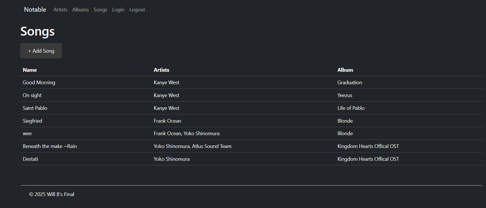

Arists Page
Songs Page
Log in confirmation

The goal of this PHP project was to utilize a Model VIew Controller Pattern to create a Music site that allows users to view a page for Aritsts, Albums and Songs. Additional, a log-in system was utilized to force users to log in before editing any data on the site. Models were used to establish a database connection, aswell as to add/update/delete/list data from tables in the database.